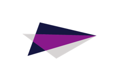

Leidos Internship
Systems Engineering
Gaithersburg, MD
May 22, 2017 - August 18, 2017

I worked on the En Route Automation Modernization (ERAM) program with the systems performance team, in the systems engineering department.
I led a tool trade study in an effort to replace an outdated discrete-event simulation model which simulates the performance of the
ERAM operational software that is used by air traffic controllers. I used MATLAB, Simulink, and the SimEvents package to develop a new
system performance model prototype of the air traffic control systems. The intent of this project was to replace the current running model.
By the end of my internship, I successfully built a simutlation model, which dispayed promising methods for modernizing and upgrading the
current simulation model. Throughout this process I learned how to read, use, and create UML sequence diagrams. I also contributed
to a written report and analysis of the trade study. Through all my hard work, I still managed to make time to participate in our site-wide
air hockey competition and was humbly crowned the Gaithersburg Leidos Air Hockey Champion!